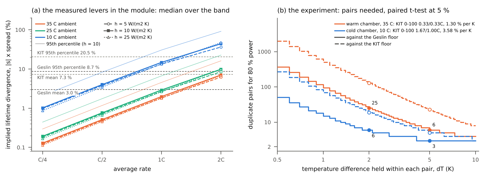
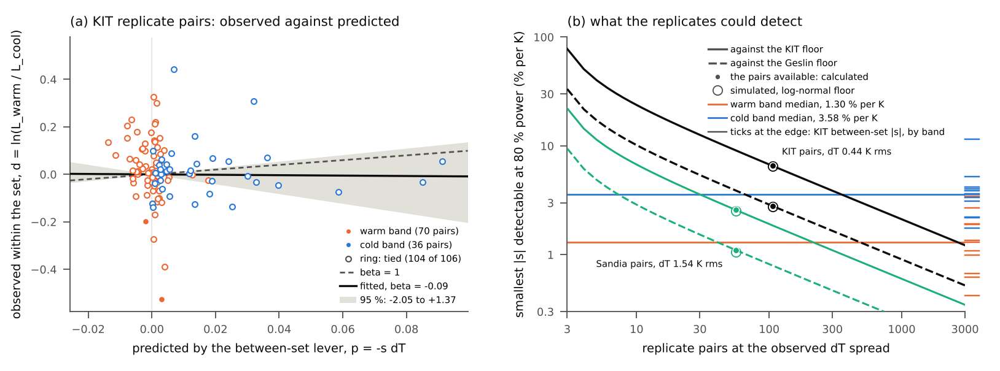
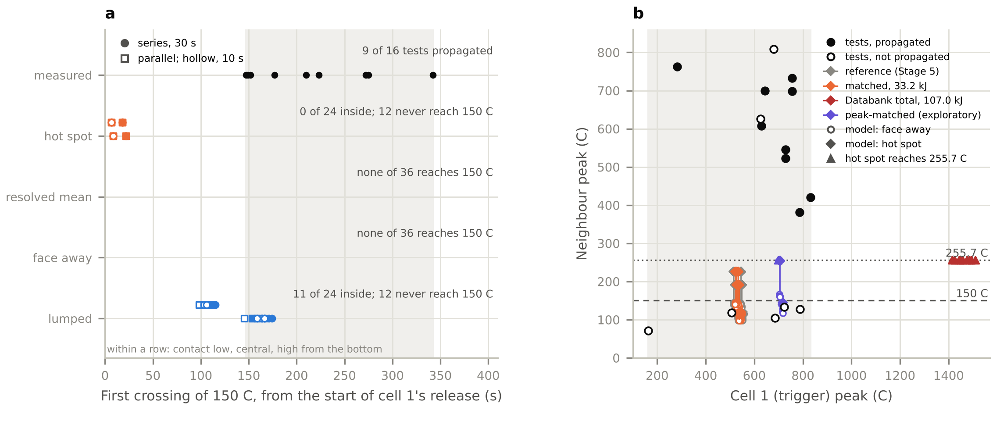
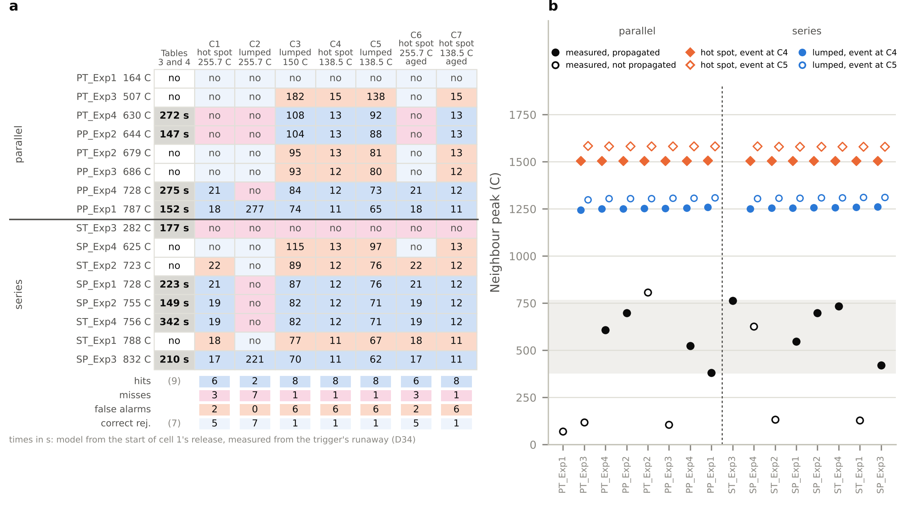
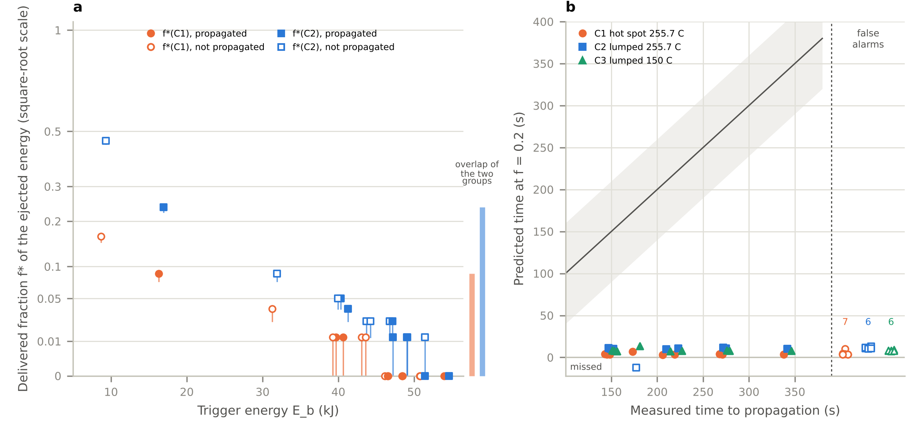
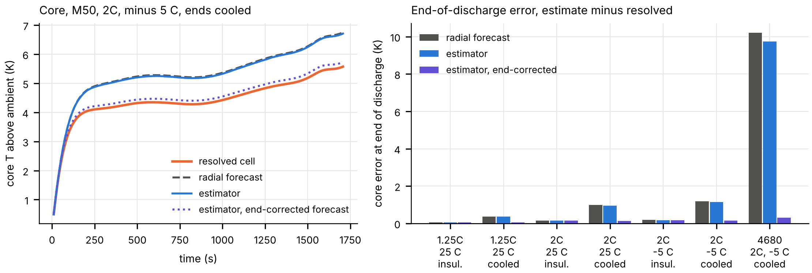
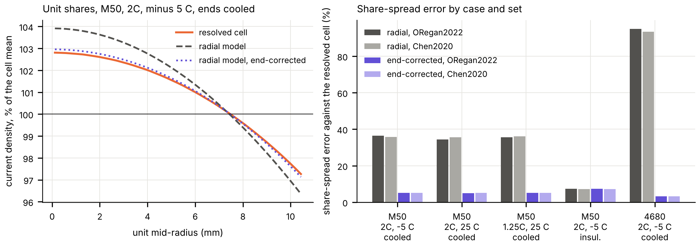

Most thermal and lifetime models of electrochemical energy systems rest on an aggregate: a cell as a uniform heat source, a stack as its mean cell voltage. My work measures what the aggregate costs: how large the error is, what sets it, and how to carry it to a decision rather than assume it away. Two sole-authored manuscripts, both submitted for publication and one already under review, set the question; five short pre-registered studies extend them toward one question, how much of the cell-to-cell lifetime divergence in a battery module is thermal in origin. For every study the predictions were committed in a public repository before any analysis, the failed predictions are reported beside the held ones, and the code, results and a one-page note are archived with a DOI.
Manuscripts
Error of the uniform heat-generation assumption in base-cooled prismatic lithium-ion cells: the roles of current collection and event duration
A 70 Ah base-cooled prismatic NMC cell modelled from published parameters: an electrochemical heat source distributed over the foils, tab strips and foil-to-terminal joints by a current-collector solve, and a conduction solver verified against three independent codes. Against a uniform source of equal heat across seven current-collection designs and six event durations, the uniform source underestimates the steady peak surface temperature by 0.06 K for a welded roll and by up to 5.9 K for the narrowest tabs, and misplaces the hot spot. The relative error is largest in short pulses, the error in kelvin largest in sustained operation; each watt in the joints adds 0.85 to 1.3 K; a drained terminal path reverses the sign; widening 20 mm tabs to 40 mm beats cooling the large face for events shorter than about 190 s at 2C.
Worst-cell degradation and stack-mean life projections in PEM fuel cell stacks: the IEEE PHM 2014 benchmark and a test on a heavy-duty stack
Fuel cell stack life is projected from the stack voltage although stacks are monitored cell by cell. Each cell of the benchmark's two five-cell stacks is analysed against a resampling null for the winner's curse, since the fastest of five noisy cells is fast partly by selection: the worst cell lost voltage 16.7 and 21.4 % faster than the stack mean, against 7.5 and 20.0 % from selection alone. Nineteen rate estimators place the two stacks' rate ratio between 0.91 and 1.94, so the estimator alone decides which stack appears to degrade faster. Predictions were written down before opening another laboratory's ten-cell heavy-duty stack; the excess appeared, but not at the predicted size, and the paper reports that.
Five pre-registered studies
Each study was registered by a public commit of its predictions before the analysis was run; the commit hash is recorded in the repository. The one-page note in each repository's note/ folder is the shortest complete account.
1. The cell-to-cell lifetime floor in a public dynamic-cycling dataset
The 45 duplicate-cell pairs of the dataset of Geslin et al. (2025) measure how far two identical cells under one protocol at 35 °C drift apart with no thermal cause in play. The duplicate lifetime difference at 90 % state of health averages 3.0 % with a 95th percentile of 8.7 %, the within-pair share of the lifetime variance is 3.0 %, and selection alone puts the worst of eight identical cells 4.1 % below the module mean. Any thermal account of divergence in a module has to clear this floor first. The addendum (v1.1.0) sets the dataset's own dynamic-against-constant-current comparisons against that floor: against the paper's no-rest baseline, 16 of 22 dynamic protocols outlive constant current at 95 % confidence, 10 of them by more than the 95th-percentile floor, while at C/10 the five periodic variants lie within 3.5 % of one another.
Predictions: v1.0 nine of nine held; addendum P1, P2 held, P3, P4 failed.
Left: cumulative distribution of the duplicate-pair lifetime difference at 90 % and 85 % state of health, with the paper's 5 % bound on the average. Right: the worst of N identical cells below the module mean by selection alone, median and 95th percentile, from resampled pairs and from a normal model.
What steady temperature difference would a thermal explanation need, and what does a module offer? Under a published Arrhenius-type ageing law two cells at 35 °C need 1.68 K between them to differ in lifetime by the 95th-percentile floor and 0.58 K for the mean, while an eight-cell 21700 module in 35 °C air at the dataset's rates offers at most 0.39 K between cells, and first offers 1.68 K at 2C. The closest published law for the dataset's own chemistry peaks near 35 °C, so its lever there is weak and of undetermined sign. The conclusion is a measurement, not a model: the dataset cell's own cycle life against temperature near 35 °C is the first thing the thesis needs, and the floor fixes how many cells that test takes. Stage 2 (v1.1.0) then measured the lever on the KIT dataset of Luh and Blank: 144 LG HG2 cells, three per protocol at 0, 10, 25 and 40 °C in oil pools with every cell's temperature logged. Between 25 and 40 °C the lever runs from −3.45 to +1.91 % per K across twelve protocols, positive at the gentlest charge and negative at 1C and above, so the module's 0.39 K implies at most 1.35 %, below the 3.0 % mean floor; from 10 to 25 °C every protocol's lever is negative, −1.8 to −11.6 % per K. The dataset's own replicate floor is 7.3 % on average and 20.5 % at the 95th percentile, and the warmer replicate reached 90 % first in only 40 % of 142 pairs. Where temperature can account for divergence is cold and fast, not warm and slow.
Stage 3 (v1.2.0) measured the lever in a second laboratory's data, the Sandia cycling study of Preger et al. (2020) shared by Battery Archive: 86 LFP, NCA and NMC 18650 cells at 15, 25 and 35 °C, with ten predictions committed before any lifetime or temperature was computed. On the 1C series between 25 and 35 °C the lever is −2.44 % per K for the NMC cell, the same LG HG2 as at KIT and inside its KIT band, and −2.04 for NCA; from 15 to 25 °C it is −5.62 for NMC, −1.32 for NCA and +3.37 for LFP. LFP's warm lever is not determinable as registered, because one 35 °C cell logged no cell temperature before its lifetime. The capacity checks lie 60 to 470 cycles apart, so 59 of 60 replicate pairs are tied within the check spacing and the replicate floor there, 11 to 37 % by chemistry, measures the spacing as much as the cells; Stage 1's 0.391 K moves NCA lifetimes by 0.80 %. An independent recomputation from the raw files reproduces every registered number.
Stage 4 (v1.3.0) joins the two halves: the measured levers run through Stage 1's module. With the resistance PyBaMM gives at each ambient (18.7, 26.6 and 47.9 mΩ at 35, 25 and 10 °C), the eight-cell module's spread grows from 1.4 to 1.5 K at 1C in 35 °C air to 3.7 to 4.1 K in 10 °C air. Under each band's median measured lever (1.30 % per K warm, 3.58 % per K cold) the implied lifetime divergence passes the 3.0 % Geslin mean in 35 °C air only at 2C (6.2 to 7.0 %) and its 8.7 % 95th percentile at no rate, while in 10 °C air it offers a share from C/2 and a detectable one from 1C (13.4 to 14.7 %); against the KIT floor the module never offers a share in 35 °C air. The registered heat is an upper bracket: with each cell's heat at its own temperature the 1C divergence in 10 °C air is 5.5 to 7.3 %. The experiment that would settle it, a paired t-test of log lifetimes with the floor as log-normal noise at 5 % and 80 % power, needs 3 duplicate pairs held 5 K apart in a 10 °C chamber and 25 pairs held 2 K apart in a 35 °C chamber against the Geslin floor (5 and 128 against KIT's). An independent recomputation written before any Stage 4 result was opened agrees to 2e-12 with the same seven verdicts.
Stage 5 (v1.4.0) runs the one direct test the datasets allow: the replicate cells of a set sat at slightly different temperatures (0.6 K in the median KIT set, up to 2.3 K), so does the lifetime difference within a set follow the between-set lever times that difference? Over 106 KIT pairs the recovery coefficient, 1 if the levers are equal and 0 if there is no thermal share within sets, is −0.09 with a 95 % interval from −2.05 to +1.37; over 56 Sandia pairs +1.55 (−0.74 to +2.50), but those pairs are ordered by the cells' own heat, so that is no evidence of a lever. The sign agrees in 45 of 106 KIT pairs, and the residual spread is the replicate floor itself. What the replicates could have detected at 80 % power is a lever of 6.6 % per K against the KIT floor, five times the warm band's median and 1.8 times the cold band's; detecting the warm median at the sets' 0.34 K spread would need 4,221 pairs, against 128 held 2 K apart in a chamber. Existing replicates cannot measure the thermal share; the sized chamber experiment can. An independent recomputation frozen before any Stage 5 result agrees to 2e-13 with the same eight verdicts.
Left: the temperature difference each floor value needs under Law 1 (NCA+LNO / Si-graphite 21700) and Law 2 (LiFePO4 / graphite 26650). Middle: what an eight-cell lumped module and one resolved cell offer against average C-rate at three film coefficients, with the dataset's rates shaded. Right: the implied divergence against the 3.0, 4.1 and 8.7 % lines, with the dataset's 92 cells post hoc.

Stage 4: (a) the implied lifetime divergence, the band's median measured lever times the module's spread, against rate in 35, 25 and 10 °C air, with the four floor lines; (b) the duplicate pairs a paired test needs at 80 % power against the temperature difference held within each pair, in a warm and a cold chamber, against the Geslin and the KIT floor.

Stage 5: (a) the lifetime difference within each KIT set against the one the between-set lever predicts from the cells' measured temperature difference; the fitted slope is −0.09 (−2.05 to +1.37), the dashed line is equal levers. (b) the smallest lever the replicates could detect at 80 % power against the number of pairs, with the measured band medians as horizontal lines.
3. The neighbour of a failing cell: one temperature against a resolved field
Two LG M50 cells, one failing with the heat release of the Battery Failure Databank, the neighbour solved twice with identical inputs: as a single temperature, as pack models treat it, and as a resolved three-dimensional field. Where the lumped neighbour reaches the self-heating temperature at all, the resolved hottest point reaches it about a minute earlier, and the resolved mean never does. The addendum asks which path the heat takes and whether a homogenised pack model applies: the busbars carry 86 to 90 % of the neighbour's intake at 500 mW/K and 58 to 66 % at 50 mW/K; in the applicability measure of a published hybrid pack model the lumped error against the resolved mean passes 0.05 only after the hottest node has reached 183.5 °C; and a two-by-four busbar-connected module in air has a packing Biot number of 46 and a conductivity ratio of 43, outside that model's conditions before any cell burns.
Predictions: v1.0.0 four of five held; addendum one held, one in part, two failed.
Against busbar conductance, at the median (21.5 kJ) and maximum (33.2 kJ) heat release: how hot the neighbour gets as a lumped node, as the resolved mean and at the resolved hottest point; when each first reaches 183.5 °C; and how far the hottest point sits above the mean.
4. Onset kinetics on that resolved neighbour, with a published Bayesian kinetic model
The published B-CRNN thermal-runaway kinetics of Koenig, Zhao and Deng (2025) integrated along the archived neighbour histories and then fed back as a heat source. With copper busbars the resolved hottest node starts to self-heat 23 to 26 s before the lumped node, every start a fresh SEI decomposing at 108 °C; the lumped model never enters the internal-short band yet releases six to seven times the resolved cell's reaction heat. The third stage carries the uncertainty: over 200 joint draws of the kinetic posterior and 30 Latin hypercube draws of the roll's published thermal properties, the lumped node never starts first in any of the 42 cases, the lead at the busbar runs from 15 to 59 s with a median of 26 s, and the kinetics, not the thermal properties, set both onsets (thermal-to-kinetic standard-deviation ratio 0.027 at the hottest node, 0.106 at the lumped node). A check against the source's published onset temperature failed the registered acceptance band and passes an amended one; both verdicts are recorded. The fourth stage asks which part of the posterior sets the lead: the anode-electrolyte submodel, which holds the SEI decomposition, carries 0.997 of its variance, the cathode none and the separator about 0.001, yet restricting that submodel to its central half narrows the lead's 95 % width by only 14.6 %, because the lead has two modes and a tighter posterior keeps both.
The fifth and sixth stages (v1.2.0) set both neighbours against the measured two-cell propagation tests of Fransson et al. (2024): LG M50 cells in direct contact, joined by welded tabs, nine of sixteen tests propagating in 147 to 342 s. With conduction and radiation only, neither neighbour reaches the 255.7 °C propagation level in any of 5,248 runs at the Databank's cell-body energy, although both heat at the rate of the propagating tests (0.35 to 0.52 °C/s against 0.4). Under the paper's own 150 °C criterion the lumped neighbour crosses inside the measured window in 11 of 12 central-contact runs, while the hot spot crosses at 7 to 22 s, before any test propagated. A trigger with its duration and peak matched to the tests' measurements (526 to 537 °C, inside the measured 164 to 832 °C) still ignites nothing in 442 runs; only the Databank's total energy with the ejected fraction, which heats the trigger to about 1,450 °C, far above any test, ignites the hot spot, at 8 to 17 s. The missing term is the ignition condition itself, an aged SEI or an internal short treated as an event, which the seventh stage tests.
The seventh stage (v1.3.0) scores the model test by test. Each of the sixteen tests gets the trigger energy that puts the failing cell at that test's measured peak (9.0 to 54.3 kJ), and seven ignition conditions are read from the same runs with a fresh and an aged SEI. At the registered central contact the resolved hot spot at 255.7 °C predicts which tests propagate better than any other condition, 11 of 16 right, but every hit comes 130 to 323 s before the measured time; the whole-cell clock at 255.7 °C is right when it fires (2 of 2) and misses seven; the paper's 150 °C criterion and the separator's melting at either clock predict 14 of 16 tests and score 9. An aged SEI raises the hot spot's first self-heating from 108 to 182 to 202 °C and changes no verdict; the internal short as an event, the cell's 65.5 kJ released at the melt, overshoots every measured neighbour maximum by about a factor of two. No single condition reproduces the outcomes, and the outcomes themselves do not follow the trigger's peak (one test propagated from a 282 °C trigger, two did not from 723 and 788 °C), so no threshold on the trigger gets more than 12 of 16 right: what a conduction model can say about propagation is bounded by the tests, not by the model.
The eighth stage (v1.4.0) turns the question round: how much of the trigger's ejected energy, delivered to the neighbour, would the model need to reproduce each test's outcome? Each trigger's ejected energy (its body energy times the Databank's median ejected-to-body ratio for the M50, 3.105, so 28 to 169 kJ) is delivered in part as a flux into the half of the neighbour's can facing the trigger, and a search finds for each test the smallest fraction f* at which the model meets a criterion. For the hot spot at 255.7 °C, f* is 0 in eight tests and at most 0.16 in all sixteen; for the whole-cell clock it is at most 0.05 in thirteen tests and 0.46 in all. The two groups overlap: the nine tests that propagated need 0 to 0.09, while the seven that did not propagate reach the criterion in the model at 0 to 0.16 (whole cell: 0 to 0.24 against 0 to 0.46), so no single fraction reproduces the sixteen outcomes. If a delivered fraction set them, it would have had to vary from test to test, a quantity the tests did not control, and propagation at a given trigger would be a probability. A fraction common to all tests, 0.1 to 0.3, gets 9 or 10 of 16 right, no better than Stage 7, and every hit still comes 126 to 339 s before the measured time. With the gas layer of Hoelle, Zimmermann and Hinrichsen (2023) between the roll and the can, the can holds the delivered heat and radiates most of it away, so the hot spot's f* rises above 0.2; in the parallel tests, Joule heat of a fifth of the cell's stored energy alone takes every hot spot to 255.7 °C. Exploratory fits, a test-to-test distribution of the fraction or a logistic in the trigger energy, do no better than one probability for every test (p = 0.075 and 0.32). f* is a model quantity, not a measurement of what reached the neighbour.
The ninth stage (v1.5.0) reads a delivered fraction from each test's own measurement rather than its outcome: from the time to propagation where a test propagated, and from the neighbour's measured surface maximum where it did not. The two clocks part company. Near its threshold the whole-cell clock has an induction time of the measured order, and with the 21 s delivery it reproduces six of the nine measured times within 10 s, at 0.2 to 4.7 % of the ejected energy (0.3 to 6 kJ) and at most 0.019 above its threshold; in the other three it jumps, within 0.003 of the fraction, from never crossing to crossing 56 to 82 s early. The hot spot reproduces no time at all: wherever it crosses, it does so within 21 s. For four of the five non-propagated tests with low maxima, conduction alone already puts the thermocouple's node 14 to 56 K above what was measured, so their fraction is zero; the smallest trigger needs 0.075 for its 71 °C. The fractions read from times and peaks therefore do not separate the two groups either: 0.075 lies above the smallest propagated test's 0.0016. Long low-power deliveries of 1 to 70 W over 2 to 6 min reproduce seven or eight of the nine times through the whole-cell clock, and the two readings of the delays, a few kilojoules followed by an induction or minutes of low power, are both consistent with the outcomes; the one neighbour history the paper publishes is what would tell them apart. In the runs that reproduce the times the thermocouple's node reads 172 to 205 °C at the measured moment, inside the paper's own onset band.
Posterior-mean kinetics: when the chemistry starts at the lumped node, the resolved mean and the resolved hottest node against busbar conductance; how fast each would self-heat; and, with the reaction heat fed back (stage 2), the hottest node entering the internal-short band while the lumped node does not.Stage 3: the lead of the hottest node over the lumped node across 200 kinetic posterior draws and 30 thermophysical draws (no draw reaches zero), and the onset against busbar conductance with the central 95 % band of the kinetic draws.

Stage 6: (a) when each model clock first crosses the paper's 150 °C criterion, against the nine measured propagation times (shaded window); only the lumped neighbour lands inside it. (b) neighbour peak against trigger peak: the sixteen tests, and the model with the Stage 5 trigger, the matched trigger, the Databank's total energy and the exploratory peak-matched trigger.

Stage 7: (a) the sixteen tests, each with its own trigger, against seven ignition conditions at the central contact; times in seconds where the condition predicts propagation, with the scorecard beneath. (b) the neighbour's peak after the internal short as an event, far above the measured maxima of the propagating tests (shaded).

Stage 8: (a) the smallest delivered fraction f* of the trigger's ejected energy at which the model reproduces each test, for the hot spot and the whole cell at 255.7 °C; the propagated and non-propagated tests overlap under both. (b) at a common fraction of 0.2, when each criterion predicts propagation against when it was measured: every hit comes early, and the false alarms and misses are counted at the right.Stage 9: (a) the crossing time against the fraction above the threshold: the whole-cell clock passes through the measured times, the hot spot never does. (b) the fraction each test needs, read from its time (propagated) or its peak (not propagated); the groups still overlap.
5. The thermal field a multi-unit cell model assumes
A published multi-unit model of the LG M50 resolves the electrode stacks inside one cell at their own temperatures and rests on a one-dimensional radial thermal model. That submodel is tested here against the resolved three-dimensional cell at the paper's own conditions. With the ends insulated the radial model holds within 0.29 K in the M50 and 1.2 K in a 4680. With the ends cooled at h = 400 W/(m² K) it misses an axial difference equal to 37 % of the radial one in the M50 (1.28 of 3.45 K) and 32 % in the 4680, the per-unit offset averages 1.19 K and 7.96 K, the unit-to-unit spread is overstated by 36 and 98 %, and the cooled ends remove 19 and 38 % of the heat.
Stage 2 (v1.1.0): with the thermal properties of Yang and Tartakovsky (2026) in place of O'Regan's, the paper's own unit differences fall from 1.7 to 3.6 times this model's to 0.9 to 1.9 times, the properties explaining most of the gap and, at −5 °C, the heat the rest. A one-term end correction derived from the cell's own properties cuts the mean unit offset with cooled ends from 1.19 to 0.10 K in the M50 and from 7.96 to 0.21 K in the 4680, and the spread overstatement from 36 to 5 % and from 98 to 3 %, with nothing fitted.
Stage 3 (v1.2.0) tests the core-temperature estimator the same group built on that radial model (Yang and Tartakovsky, 2026): an ensemble Kalman filter that assimilates the surface temperature and learns the forecast's error as a heat source per layer. Implemented as the paper states it, with its 3,000 members and 0.1 K measurement noise, and with the error's noise level, which the paper leaves open, bracketed at 0.1, 1 and 10 times a reference level, the estimator is run with the resolved cell as the truth. With the ends insulated it keeps the radial model's accuracy, a mean error of at most 0.14 K. With the ends cooled, at 2C and −5 °C, it leaves 1.14 of the forecast's 1.18 K end-of-discharge miss in the M50 and 9.7 of 10.2 K in the 4680 at the registered level, and 0.48 and 5.9 K at ten times it: how much of the axial miss a learned error absorbs depends on a noise level the paper does not give. Its learned error is 1.4 to 1.7 % of the end correction's sink in the cooled M50 cases, and with Stage 2's end correction in the forecast the same estimator's end-of-discharge error falls to 0.05 to 0.15 K in the M50 and 0.31 K in the 4680. Doubling the measurement noise raises the mean error by 0.02 K.
Stage 4 (v1.3.0) carries the thermal error to what the multi-unit model is for: with each unit at the temperature the radial, the resolved and the end-corrected field give it, each unit's resistance from a PyBaMM pulse at that temperature and its share of the cell current in parallel with the others. The error keeps its size. With the ends cooled at 2C and −5 °C the radial field puts the unit-to-unit spread of the current 36 % too wide in the M50 and 95 % too wide in the 4680, under either parameter set, while the cell's mean resistance moves by only 1.7 and 9.6 %; the end correction leaves 5 and 3 % of the spread error and under 0.3 % of the resistance error. With the ends insulated the spread error is 7 %.
The radial model against the resolved cell: the radial profile at mid-height and the profile along the axis in the M50, and the temperature of each unit from core to surface in the M50 and the 4680, with the side cooled, the side and ends cooled, with tabs added, and with h = 25 W/(m² K).

Stage 3: (a) the core temperature of the M50 at 2C and −5 °C with the ends cooled: the resolved cell, the radial forecast, the estimator at the registered noise level, and the estimator whose forecast carries the end correction; (b) the end-of-discharge core error for the three methods across the seven cases.

Stage 4: (a) the current each unit draws in parallel, from its own temperature, under the three fields in the M50 at 2C and −5 °C with the ends cooled; (b) the error of the unit-to-unit current spread for the radial and the end-corrected field across the five cases, under both parameter sets.
How the work is done
Predictions are committed to the public repository before the analysis runs; the commit hash is recorded in the note.
Failed predictions are reported with the held ones, with the reason where it is known.
Every number in a note or manuscript traces to a script and an archived result file.
Solvers are verified against independent codes before they are used.


![Left: crossing time against the delivered fraction above the Stage 8 threshold for the hot spot and the whole-cell clock in the nine propagated tests, with each test's measured time marked; the whole-cell curves pass through the measured window and the hot spot stays below 25 s. Right: the delivered fraction read from each test, from the time for the propagated tests and from the peak for the non-propagated, against trigger energy, with the largest non-propagated fraction above the smallest propagated one.](assets/kinetics_stage9.png)